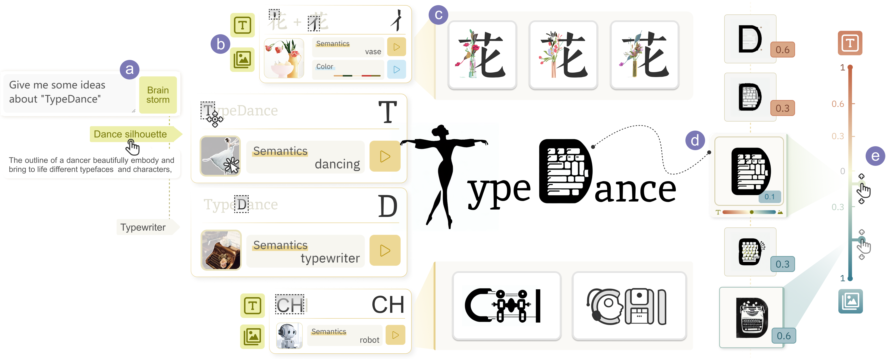
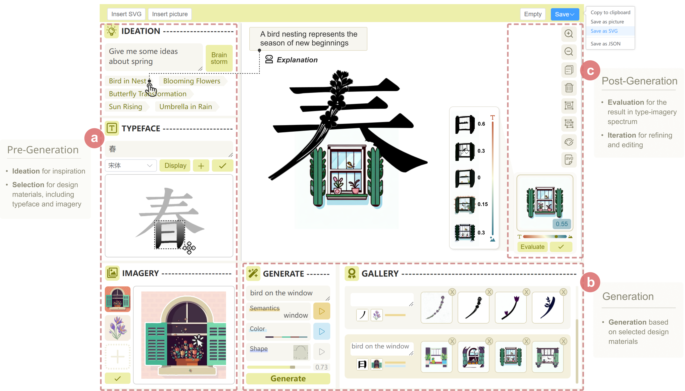

Semantic typographic logos harmoniously blend typeface and imagery to represent semantic concepts while maintaining legibility. Conventional methods using spatial composition and shape substitution are hindered by the conflicting requirement for achieving seamless spatial fusion between geometrically dissimilar typefaces and semantics. While recent advances made AI generation of semantic typography possible, the end-to-end approaches exclude designer involvement and disregard personalized design. This paper presents TypeDance, an AI-assisted tool incorporating design rationales with the generative model for personalized semantic typography.


If you find this paper useful, please consider citing it.
@inproceedings{typedance24,
author = {Xiao, Shishi and Wang, Liangwei and Ma, Xiaojuan and Zeng, Wei},
title = {TypeDance: Creating Semantic Typographic Logos from Image through Personalized Generation},
booktitle = {Proceedings of the 2024 CHI Conference on Human Factors in Computing Systems (CHI)},
articleno = {175},
numpages = {18},
year = {2024},
doi = {10.1145/3613904.3642185}
}